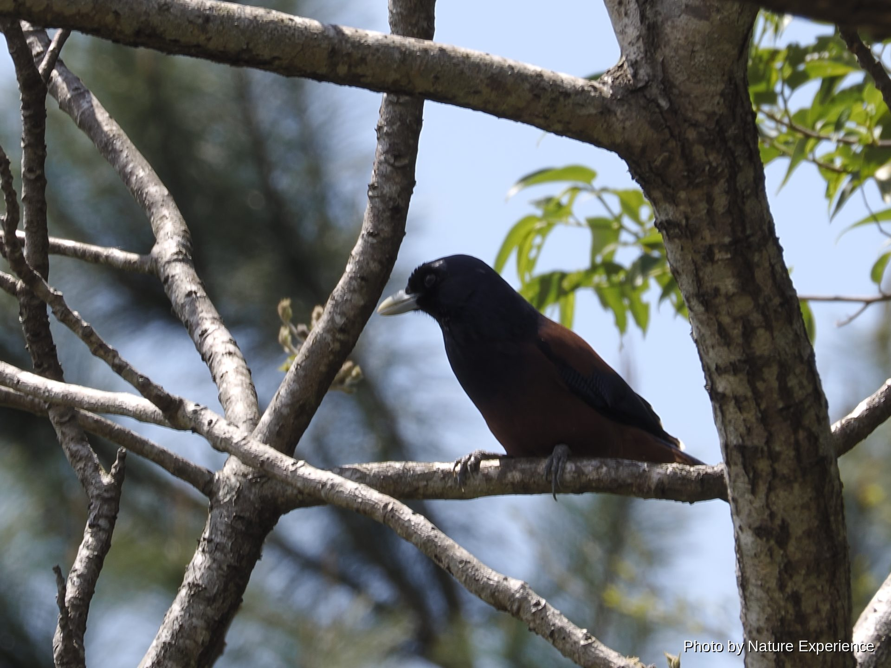

鸟类
―― 雀形目(鹟科、鸦科、寿带) ――

全长约14厘米，体重约18克。从男女群岛经吐噶喇列岛、奄美大岛及其周边岛屿到德之岛一带 繁殖的日本固有种，1970年被指定为天然纪念物。它是奄美大岛的留鸟，一年四季都能见到， 但在3月至6月的繁殖期，雄鸟会格外频繁地鸣叫以宣示领地，这一时期清晨循着鸣声寻找最容 易发现它。雄鸟头部、背部及尾部呈鲜艳的橙红色，胸部和体侧的黑色部分看起来像"胡须"， 这也是其日文名称的由来。雌鸟整体色调较为朴素。常在常绿阔叶林的林下取食昆虫。冲绳岛 北部栖息着另一近缘种，但两者的分布范围并不重叠。
禁止捕获、转让(天然纪念物)
全长约30厘米。仅分布于奄美大岛的留鸟，黄褐色底色上带有虎斑状的黑色斑纹。已被指定为 国家天然纪念物及国内稀有野生动植物种。喜欢栖息在树龄较高的阔叶林阴暗林下，以蚯蚓等为 食。繁殖期为2月至4月初，在黎明前及黄昏的昏暗时段会发出清脆美丽的"叩噜嗯、唏——"鸣 声。曾因森林砍伐及外来物种的影响而数量锐减，一度被称为"幻之鸟"，但近年来随着森林的恢 复，其种群数量呈现恢复趋势。
禁止捕获、转让(天然纪念物)
全长约38厘米。仅分布于奄美大岛、加计吕麻岛及请岛的日本固有种，通体琉璃蓝色，翅膀呈 红褐色，喙和翼尖呈白色，十分美丽。1921年被指定为天然纪念物。喜欢栖息在常绿阔叶林， 食性为杂食，以椎树及橡树的果实为食。约从12月起开始筑巢准备，繁殖期为2月至5月左右， 在树洞等处产卵3〜7枚；2月下旬至4月上旬亲鸟会在巢附近频繁活动，是格外容易观察到它的 时期。曾因野猫及外来入侵种爪哇獴的捕食而数量减少，但随着保护工作取得成效——包括2024年宣布 灭獴成功——近年来种群数量正在恢复。白天活跃地四处飞翔，夜晚则可观察到它在林道沿线的 电线或树枝顶端休息的身影。
禁止捕获、转让(天然纪念物)
雄鸟连尾羽全长约45厘米，雌鸟约18厘米。通体带黑紫色光泽，眼周和喙呈鲜艳的钴蓝色。 雄鸟拥有近乎体长三倍的长尾羽，飞行姿态十分独特。在奄美大岛作为夏候鸟于4月前后飞 来，常在昏暗的林内枝头间穿梭跳跃，在空中捕食小虫、蜂类、蝴蝶等飞行昆虫。其鸣声听 起来像"月、日、星，嗬伊嗬伊嗬伊"，因而以日、月、星三种光芒之意被称为"三光鸟"。5月 至7月间，它会用苔藓等材料在树杈间筑成碗状巢，雌雄共同抱卵育雏。雏鸟离巢前，如在巢 附近长时间逗留或摇晃树枝，可能导致亲鸟弃巢，因此应隔着望远镜进行短时间观察。9月前 后，它会再次飞往东南亚的越冬地。
无特殊保护等级―― 佛法僧目(翠鸟类) ――

体长约17厘米，体重19〜40克左右的小型翠鸟。头部至背部呈带光泽的青绿色，腹部为鲜艳 的橙色，因而被称为"水边的宝石"。在奄美大岛为留鸟，一年四季都能见到，常出没于河 流、水田边的水渠以及各种池塘等淡水环境。它会停在水边伸出的树枝或木桩上注视水面， 一旦发现小鱼或虾便会猛地扎入水中捕食。领地意识很强，多单独或成对活动，在河岸或崩 塌的斜坡土中挖掘横穴筑巢。繁殖期大约在3月至8月，一对繁殖鸟有时会连续育雏数次；求 偶时雄鸟会将小鱼递给雌鸟，称为"求爱喂食"，这一时期活动格外活跃，也更容易观察到。 与本网站介绍的大多数鸟类不同，它并非夜间森林的居民，而是少数可以在白天的水边轻松 观察到的鸟类。
无特殊保护等级
全长约27厘米，通体呈带光泽的红褐色，飞行时腰部的浅蓝色斑纹十分显眼。在奄美大岛当 地也被称为"库卡鲁(クッカル)"，因"叽哦哦哦哦——"般响亮的鸣声而深受喜爱。它是一种 夏候鸟，通常在黄金周前后的4月末从东南亚的越冬地飞来，9月前后再度南迁离开。虽属翠 鸟科，但它并不太吃鱼，而是广泛捕食螃蟹、青蛙、蜥蜴及森林中的各种昆虫。6月至7月的 繁殖期，它会在树洞或啄木鸟废弃的旧巢中产下约5枚卵，雏鸟多在7月前后离巢。此时亲鸟 会变得格外敏感，靠近巢树、制造噪音或使用闪光灯拍摄都可能导致弃巢或雏鸟提前离巢， 因此应保持距离、安静观察，且不宜逗留太久。
无特殊保护等级
―― 鸻形目(鹬科、鸻科) ――

全长约35〜36厘米。仅分布于奄美群岛和冲绳诸岛的日本固有种，已在奄美大岛、加计吕麻 岛、请岛、与路岛及德之岛确认有繁殖记录。外形与近缘的丘鹬相似，但腿更长、通体偏黑，体 型比其他鹬类更为敦实。喜欢栖息在常绿阔叶林阴暗的林下地面，从日落到日出期间活动活跃， 在地面觅食蚯蚓和昆虫。在晨昏的昏暗时段及满月之夜尤为活跃。繁殖期约为2月至5月，黄昏 时分雄鸟会进行求偶及宣示领地的"展示飞行"，这段时期是全年最容易发现它的时候。在林内 地面筑巢，3月至5月左右产卵2〜4枚。1993年被指定为国内稀有野生动植物种。獴类和野猫的 捕食，以及森林砍伐导致的栖息地减少，是其面临的课题。
禁止捕获、转让(国内稀有野生动植物种)
体长32厘米，头上有长长的冠羽，背部呈带光泽的绿黑色，腹部为白色。因姿态优雅而被 称为"冬日贵妇"。在欧亚大陆繁殖，作为冬候鸟飞抵日本。在奄美大岛，它通常从10月下 旬前后开始出现在水田、旱地等开阔的农耕地，一直停留越冬至翌年3月末至4月左右。常成 群活动，在泥土中觅食蚯蚓和昆虫。与本网站主要介绍的夜间森林生物不同，它是在白天的 农耕地里就能轻松观察到的冬季使者。
无特殊保护等级